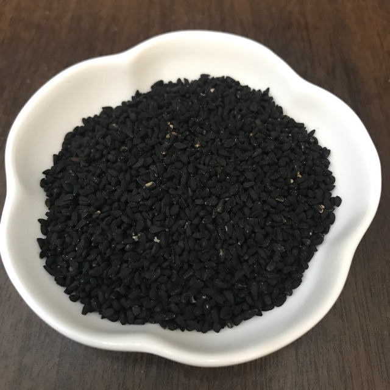

Jintan hitam (Nigella sativa) adalah terna, daunnya berbau segar, bijinya mengandung minyak asiri dan lemak, digunakan untuk rempah-rempah dan campuran obat-obatan, misalnya untuk obat sakit perut.Terna ini merupakan rempah-rempah yang dapat digunakan sebagai tanaman obat.Rempah ini berbentuk butiran biji berwarna hitam yang telah dikenal ribuan tahun yang lalu dan digunakan secara luas oleh masyarakat India, Pakistan, dan Timur Tengah untuk mengobati berbagai macam penyakit.